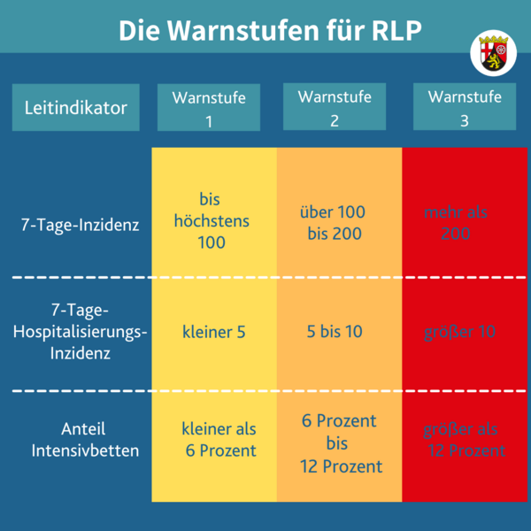

Hygienekonzept
für die Durchführung der privaten Veranstaltung
Hochzeitsfeier Ursula und Nicolas Trinler
am 20.11.2021 bis 21.11.2021
durch Ursula Trinler und Nicolas Trinler
im Hofgut Heidesheim, Heidesheimer Hauptstraße 10, 67283 Obrigheim, Pfalz
gemäß der 27. Corona-Bekämpfungsverordnung Rheinland-Pfalz, gültig ab 08.11.2021
Allgemeine Hinweise
Die Teilnahme an der Veranstaltung ist untersagt im Fall von Symptomen einer Atemwegserkrankung, bei erhöhter Temperatur oder
bei nachweislichem Kontakt zu einer COVID-19 infizierten Person in den vorherigen 14 Tagen.
Der Zutritt zum Veranstaltungsgelände wird durch einen Hygienebeauftragten kontrolliert und nur Personen mit „2G+-Status“
gewährt (siehe https://corona.rlp.de/de/aktuelles/corona-regeln-im-ueberblick/ ). Es gibt die Möglichkeit zur Durchführung
kostenloser Selbsttest direkt am Hofgut Heidesheim, welche vom Veranstalter organisiert werden.
Zum Nachverfolgen von Infektionsketten werden die Kontaktdaten (Namen, Telefonnummern, Emailadresse, Postanschrift) der
Gäste und Dienstleister der Feier erfasst und auf Anfrage dem Gesundheitsamt oder der Ortspolizeibehörde zur Verfügung
gestellt. Diese Daten werden für 4 Wochen vorgehalten.
Der Veranstalter empfiehlt das Mitführen eines Smartphones mit installierter CORONA-Warn-App.
Das Hygienekonzept findet Anwendung während der Veranstaltung. Dies ist die Zeit ab 12 Uhr (20.11.2021) bis 16 Uhr nach Ende der Veranstaltung am 21.11.21.
Zutritt zum Hofgut Heidesheim - Kontakterfassung
Der Zutritt in die Räumlichkeiten des Hofgut Heidesheim werden kontrolliert. Nur Gäste, die sich vorher über die Homepage
ursula-nicolas-2021.de angemeldet haben, sowie Mitarbeiter des Hofgut Heidesheim und sonstigen Dienstleister für die
Hochzeitsfeier, sind auf dem Gelände zugelassen.
Bei der Anmeldung auf der oben genannten Homepage wurden Kontaktdaten und Impf- bzw. Genesenenstatus aller Gäste erfasst.
Kontaktdaten der Mitarbeiter des Hofgut Heidesheim und Mitarbeiter sonstiger Dienstleister für die Hochzeitsfeier
(z.B. Photograph, Traurednerin,…) werden am Veranstaltungstag zusätzlich erfasst.
Die Veranstalter halten sich an die vorgegebenen Teilnehmerzahlen, die vom Land Rheinland-Pfalz vorgegeben sind, um eine
Veranstaltung im Innenbereich ohne Maskenpflicht und Abstandsgebot durchführen zu können. Dabei hängt die Anzahl
nicht-geimpfter und nicht-genesener Gäste (also nicht-immunisierter Gäste) von der vom Land Rheinland-Pfalz definierten
Warnstufe ab (siehe Abbildung weiter unten): höchstens 25 (Warnstufe 1), höchstens zehn (Warnstufe 2) und höchstens fünf (Warnstufe 3)
nicht-immunisierte Gäste dürfen höchstens an der Veranstaltung teilnehmen.
Werden diese Regeln eingehalten, gilt in diesem Fall laut der 26. Corona- Bekämpfungsverordnung Rheinland-Pfalz nur die Pflicht zu Kontakterfassung, die Testpflicht (siehe „Testpflicht“ weiter unten) und die Pflicht zur Vorhaltung eines Hygienekonzepts.
Testpflicht
Alle Gäste, sowie Personal der an der Veranstaltung beteiligten Dienstleiter und dem Hofgut Heidesheim zugehörend, welche
nicht geimpft oder nicht genesen sind (nicht-immunisiert), müssen ein negatives Testergebnis vorweisen. Der Veranstalter
darf nur im Fall eines negativen Testergebnisses Zutritt zur Veranstaltung gewähren.
Die Testpflicht kann durch einen sog. Schnelltest oder einen sog. Selbsttest erfüllt werden. Bei beiden Testarten muss es
sich um einen PoC-Antigentest handeln, der durch das Bundesinstitut für Arzneimittel und Medizinprodukte zugelassen und
auf der Website https://www.bfarm.de/DE/Medizinprodukte/Antigentests/_node.html gelistet ist. Ferner kann die Testpflicht
auch durch einen PCR-Test erfüllt werden. Alle Teste dürfen nicht mehr als 24 Stunden zurückliegen.
Kinder bis einschließlich 11 Jahre, Schülerinnen und Schüler sowie geimpfte Personen und genesene Personen sind von der Testpflicht ausgenommen. Eine vollständig geimpfte Person verfügt über eine vollständige Schutzimpfung gegen das Coronavirus SARS-CoV 2, leidet nicht unter typischen Symptomen einer Infektion mit dem Coronavirus SARS-CoV-2 und ist im Besitz eines auf sie ausgestellten Impfnachweises. Eine genesene Person leidet nicht unter typischen Symptomen einer Infektion mit dem Coronavirus SARS-CoV-2 und ist im Besitz eines auf sie ausgestellten Genesenennachweises. Die Veranstalter legt aber ausdrücklich ALLEN Gästen nahe, mindestens einen Selbsttest innerhalb 24h vor Veranstaltungsbeginn durchzuführen und das negative Testergebnis mitzubringen! Es gibt die Möglichkeit einen kostenlosen Selbsttest direkt am Hofgut Heidesheim durchzuführen.
 Source: https://corona.rlp.de/de/aktuelles/corona-regeln-im-ueberblick/